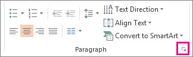
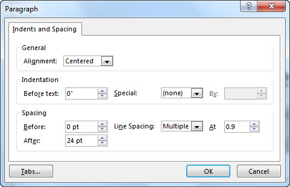

To make the text on your slides easier to read, you might want to change the spacing between lines of text and between paragraphs in your PowerPoint presentation. You can also adjust the alignment and indentation of lines of text.
Line spacing (single-space, double-space, and so on) and vertical alignment (top, bottom, or middle) are available from menu buttons on the Home tab of the Ribbon, in the Paragraph group:
Figure 1: Line spacing
Figure 2: Vertical alignment
There are more detailed spacing options available in the Paragraph dialog box:
On the slide, select the text that you want to change.
Click Home, and in the Paragraph group, click the dialog box launcher.
The Paragraph dialog box appears:
Here are the options available in the dialog box:
Alignment
To change the horizontal placement of text, in the Alignment box, choose Left, Center, Right, Justified, or Distributed. Justified adds spacing between words so that the lines of text touch both the left and right margins, except for the last line of the paragraph, which uses normal word spacing. Distributed is similar to Justified, but even the last line touches both the left and right margins, with space added between words and letters, as necessary.
Indentation
To add indentation or change the amount of indentation before text, select or type a number in the Before text box. You can use the Special options to only indent the first line, or to add a hanging indent.
Indentation is measured in inches, and it can be any whole number or decimal, such as 1.2 inches.
Spacing
To change the spacing above or below a paragraph, type or click the arrows next to Before or After. This number can be any whole number or a decimal, such as 6.5.
To change the spacing above and within a paragraph, use the Line Spacing options: Single, 1.5 Lines, or Double. Or select Exactly and then add a point value (between 0 and 1584) in the At box. (The bigger the point value, the wider the spacing.) Or select Multiple and add a value to the At box. (Use any number less than or equal to 9.99: A value of 1 would equal single-spacing, while a value of 3 would equal triple-spacing).
Note: If you keep adding lines until you run out of room in a placeholder, AutoFit adjusts line spacing and font size to fit all list items in the placeholder. When this happens, the AutoFit Options control appears. To turn off AutoFit, click AutoFit Options, and then click Stop Fitting Text to This Placeholder.